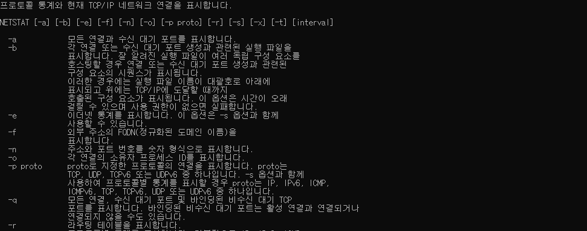
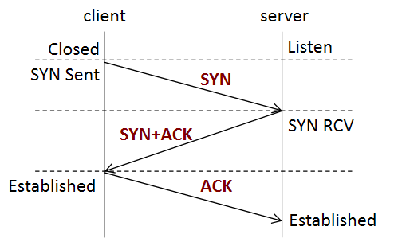

* 개인적인 공부 내용을 기록하는 용도로 작성한 글 이기에 잘못된 내용을 포함하고 있을 수 있습니다.
출처 : 해킹 입문자를 위한 TCP/IP 이론과 보안 2/e
#1 TCP&UDP
#2 포트 번호
#3 3-Way Handshaking
#1 TCP&UDP
TCP(Transmission Control Protocol)와 UDP(User Datagram Protocol)는 OSI7 & TCP/IP 모델의 전송계층에서 사용되는 프로토콜이다.
TCP 전송 방식은 데이터를 신뢰성있게 주고 받고자 하는 안정적인 전송을 요구하는 환경에서 사용한다. 송신 측 호스트와 수신 측 호스트는 서로 확인 메시지를 주고받으며 데이터의 신뢰성을 높여준다.
반면에 UDP 전송 방식은 수식 측에서 수신 가능한지 여부는 고려하지 않은 채 무조건 전송만을 수행한다. 데이터의 신뢰성이 떨어진다는 단점이 있지만 그만큼 통신의 속도가 빨라진다는 장점을 가지고 있다.
#2 포트 번호
TCP와 UDP는 '포트 번호'를 이용해 데이터를 송신할 서비스를 결정한다. 포트번호는 '0~65535' 사이의 숫자로 이루어져 있으며, '0~1203'은 잘 알려진 포트(well-known port) '1024~49151'은 등록된 포트 '49152~65535'는 동적포트로 나누어 구별한다.
명령 프롬포트 창에 netstat 명령어를 사용하면 어떤 방식(TCP or UDP)으로 연결되어 있는지 또는 연결된 서비스의 포트번호 등을 확인할 수 있다. netstat 명령어의 자세한 사용법은 netstat /? 명령을 통해 확인할 수 있다.

#3 3-Way Handshaking

TCP는 3단계 연결 설정(3-Way Handshaking) 을 이용해 네트워크에 연결한다. 3-Way Handshaking 이란 전송을 수행하기 전에 서로의 네트워크 통로(Port)를 확인하고 연결하는 3단계로 이루어진 절차를 의미한다.
1. Client는 Server로 SYN(동기화 신호)를 전송하여 수신 가능 여부를 묻는다.
2. Server는 SYN신호를 받은 뒤 Listen상태에서 SYN_RCV(Received)상태로 변경한 뒤 SYN/ACK(요청수락) 신호를 Client측으로 전송한다.
3. Client측은 SYN/ACK신호를 받은 뒤 Established(연결완료)상태로 변경 후 server측으로 ACK신호를 보낸다.
4. Client Server의 포트가 모두 Established 상태로 변경된 후 연결이 실행된다.
TCP가 3-Way Handshaking방식을 사용해 송수신간 상호작용이 가능한 이유는 버퍼링(Buffering)방식 덕분이다. 버퍼링이란 정보의 송수신을 원할하게 하기 위해 정보를 일시적으로 버퍼(Buffer)라는 공간에 저장하여 송수신간 처리 속도차를 줄이는 방법이다.
UDP는 버퍼링 기능이 존재하지 않기에 일방적인 전송만을 수행한다. 따라서 TCP와 UDP의 차이를 버퍼링의 유무에 따라 구분 할 수도 있다.
정리하자면 TCP방식은 안정적인 전송을 요구하는 환경에서 주로 사용되며, 데이터 전송에 대한 신뢰성이 높지만 속도가 떨어진다는 단점이 있다. 반면에 UDP방식은 일련의 제어가 없어 데이터 전송에 대한 신뢰성이 떨어지지만 빠른 전송이 가능하다는 장점이 있어 시간에 민감한 환경에서 주로 사용한다.